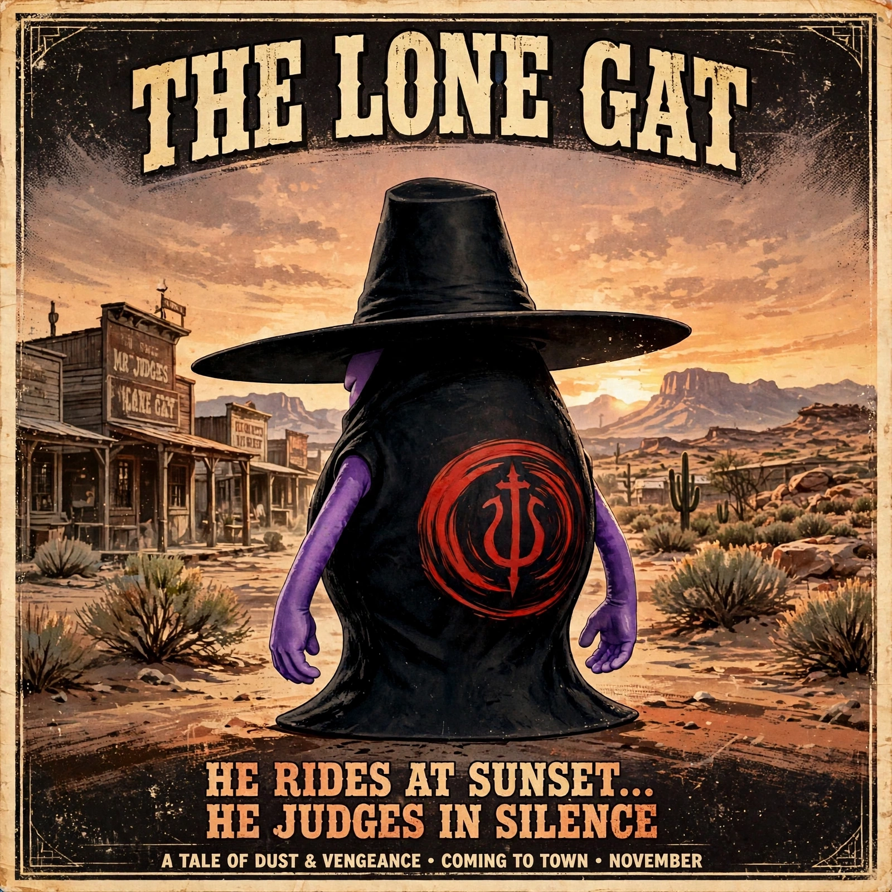

세로(Sero)
Kmon팀의 리더(저승사자)

Kmon의 존재들을 하나씩 만나 보세요.
오늘의 운세처럼 나만의 에너지를 발견해 보세요.
오늘, 이번 주, 이번 달의 시그널을 확인하고 나에게 어울리는 KMON 카드를 만나보세요.
생년월일은 저장하거나 서버에 전송하지 않습니다.
당신만의 Kmon 카드,
특별한 능력이 당신의 것이 됩니다.
NORMALRAREEPICLEGEND
요괴 : 동자
악귀 : 빼빼아귀
요괴 : 동녀
악귀 : 물귀신
Kmon의 존재들을 하나씩 만나 보세요.
악귀 : 달걀귀신
Kmon팀소속, 세자매의 막내(처녀귀신)
Kmon팀소속, 몽달귀신(총각귀신)
악귀 : 뚱보아귀
Kmon팀의 리더(저승사자)
처녀귀신 세자매의 둘째인 체리는 귀여운 외모와 공주병 기질을 가진 사랑스러운 귀신이다. 언제나 자신이 가장 예쁘고 특별하다고 생각하며 관심과 칭찬을 즐긴다. Kmon의 팀원으로서 다른 네 명의 팀원 사이를 이어주는 가교 역할을 하며, 팀의 조화와 화합에 중요한 역할을 한다.
Kmon팀소속, 세자매의 맏언니(처녀귀신)